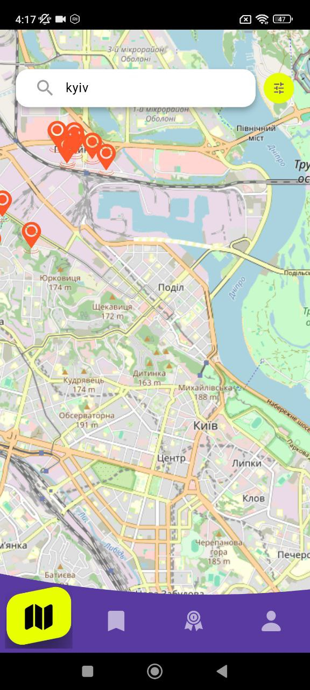
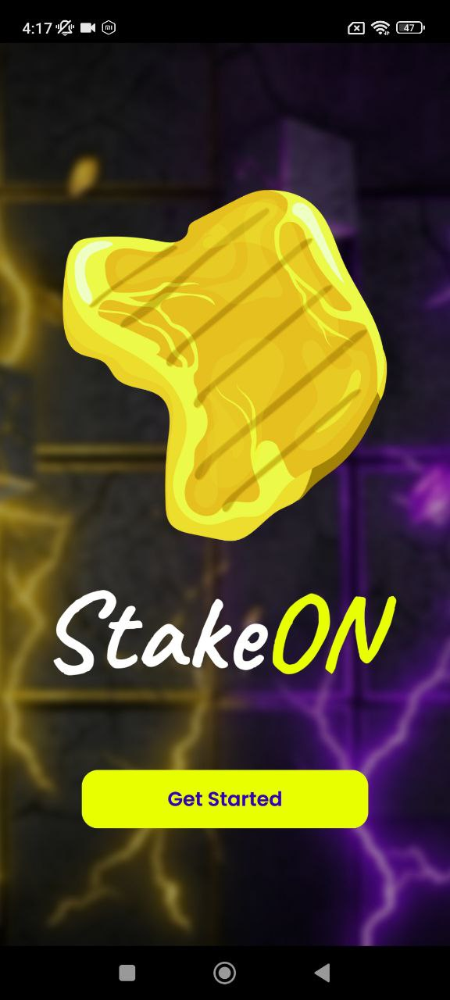
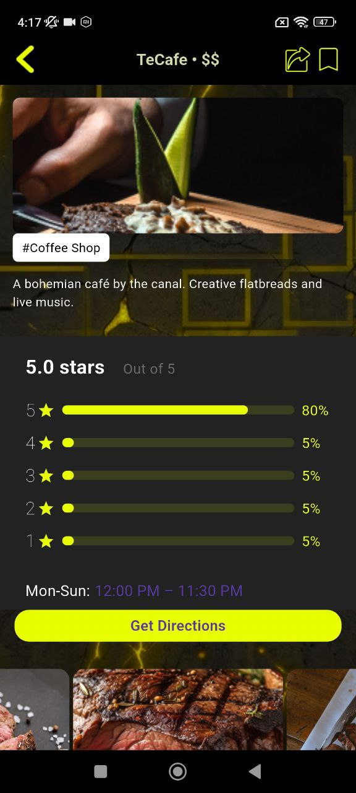
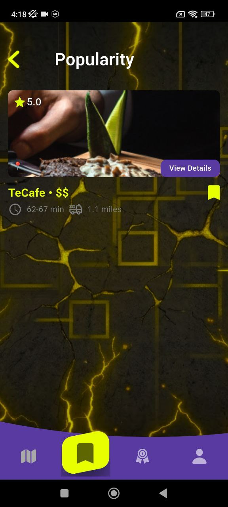
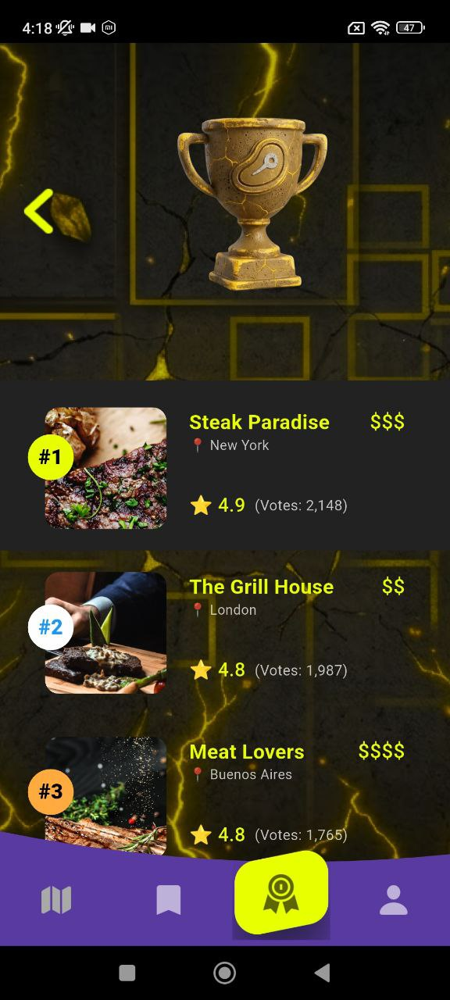
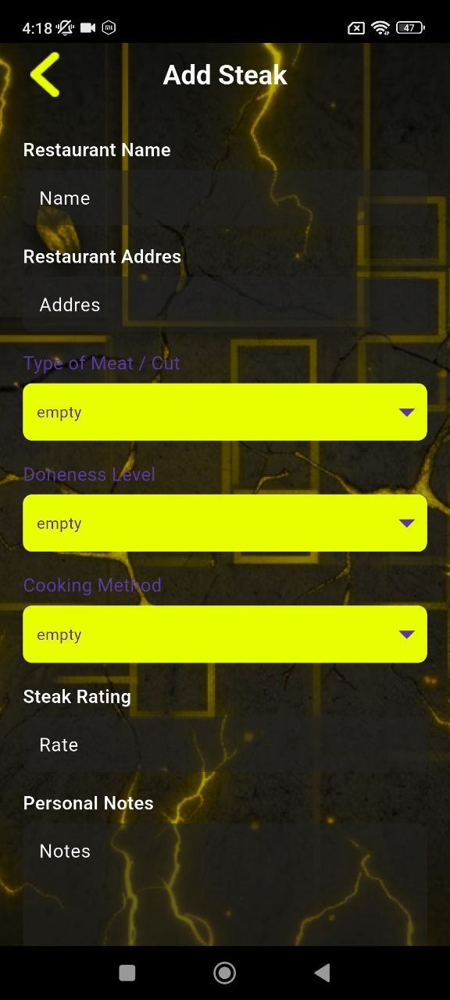

Map-based exploration
Search the city visually and find great cafés or restaurants around you in a familiar location-first flow.
Beton Caffe Explorer helps users discover stylish cafés, premium steak places and memorable food spots with a fast map flow, visual rankings and restaurant detail pages.


This landing page uses your screens as product storytelling: map means discovery, rankings mean status, restaurant pages mean trust, and review flow means personal experience.
Beton Caffe Explorer combines map browsing, ranking views, restaurant detail pages and user-driven steak notes in one polished mobile app flow.
Search the city visually and find great cafés or restaurants around you in a familiar location-first flow.
View photos, rating breakdowns, open hours and key context before deciding where to go.
Showcase top places in a more aspirational way with rich cards and luxury ranking presentation.
Star summaries and score visualizations help users quickly understand whether a place is worth it.
Add meat type, doneness, cooking method and notes to keep food experiences more personal and memorable.
Dark concrete textures, gold cracks and purple interface accents create a distinct premium brand style.
The map screen gives the product an immediate practical value. It tells users what is around them and turns search into a simple visual action.
The restaurant detail page is one of the strongest screens in the app. It combines photo, score, timing and action in a way that feels much more polished than a simple listing card.

Popularity and ranking screens help position the app as a discovery guide, not just a directory.
Show trending cafés and food places with rich preview cards and a clear visual hierarchy.

Rankings become a luxury food guide with strong positioning, visual status and memorable brand feel.

The add-steak flow gives the app a more personal side. Instead of only consuming information, users can keep their own notes about meat cuts, doneness and cooking methods.

Only the strongest screens are used here, so the product looks curated and premium.
The splash screen instantly communicates the dark luxury style and makes the brand feel recognizable.
A direct map-first discovery flow helps the app feel useful from the first interaction.
Ratings, photos and timing give users practical confidence before visiting a place.
Rich ranking presentation turns the app into more than a list — it becomes a guide.
Personal review inputs add depth and make the product feel more interactive and memorable.
These are styled starter testimonials. Потом сможешь заменить их на реальные.
“What I like most is the visual mood. It feels like a premium city guide, not just another food app.”
“The place detail page is really helpful. Photos, stars and timing all sit together in a very clean way.”
“The ranking screens make the product feel curated and premium. Much stronger than a basic restaurant list.”
Download Beton Caffe Explorer and turn local food discovery into a more refined, visual and memorable experience.